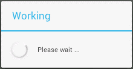
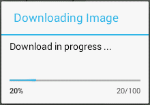

A progress dialog is a special dialog showing a progress indicator and an optional text message or view. A progress dialog can have either a simple indeterminate style or a more sophisticated determinate style (see below). In the indeterminate style, it displays a circular, spinning progressive bar while in the determinate style it displays a horizontal progress bar.


Indeterminate (left) and determinate (right) progress dialogs
A progress dialog is commonly used to display the progress of a task that is taking up a lot of time, for example, a file download.
Here's code snippet for creating and showing a indeterminate progress dialog.
final ProgressDialog dialog = new ProgressDialog(context); dialog.setTitle("Working"); dialog.setMessage("Please wait ..."); dialog.setCancelable(false); dialog.setIndeterminate(true); dialog.show(); new Thread(new Runnable() { public void run() { try { // do meaningful work, e.g., writing clean code Thread.sleep(3000); } catch (InterruptedException e) { } dialog.dismiss(); } }).start();
The dismiss method remove a dialog from the screen
and it is thread safe.
void incrementProgressBy(int) to show the progress of a
(background) task or work.
final ProgressDialog dialog = new ProgressDialog(context); dialog.setTitle("Downloading Image"); dialog.setMessage("Download in progress ..."); dialog.setProgressStyle(ProgressDialog.STYLE_HORIZONTAL); dialog.setProgress(0); dialog.setMax(100); dialog.show(); new Thread(new Runnable() { public void run() { try { // consuming work here, e.g., downloading image for (int i = 0; i < 10; i++) { Thread.sleep(500); MainActivity.this.runOnUiThread(new Runnable() { public void run() { dialog.incrementProgressBy(10); } }); } } catch (InterruptedException e) { } dialog.dismiss(); } }).start();As shown above, the
incrementProgressBy(int) method
is not thread safe and thus must be run on the UI thread.
The runOnUiThread(Runnable) method of the
Activity class runs the specified action on the
UI thread.